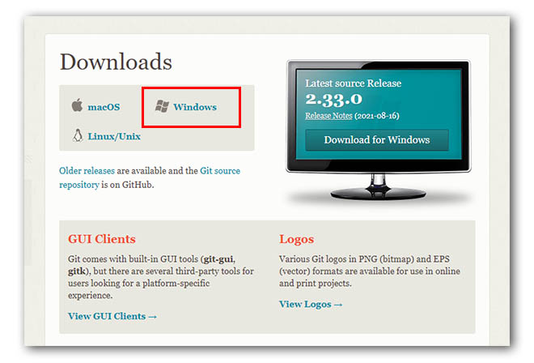
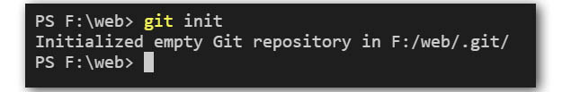

Git - 版本管理工具
git 是繼subversion後最多人使用的版本管理工具，並結合雲端服務衍生許多應用來。
git 本身可以只在單機上執行版本管理的工具，建立起server端的托管倉庫後則又可以提供多人合作開發的應用，使用上非常有彈性。
安裝與設定
- 連上Git官網，依據使用的作業系統(win/mac/linux)平台下載相符的安裝程式

- windows平台的話下載安裝程式後，點擊安裝程式就可以進行安裝，其它平台請見官網說明使用shell指令進行安裝
- 在安裝項目中，當出現選擇預設編輯器時，建議選擇已經有安裝的vs code做為預設編輯器，原始的git附的編輯器是vim，操作方式和windows的軟體不太一樣
如果不小心在安裝時忘了選擇預設編輯器，可以在安裝完成後在命令列輸入以下指令來指定vs code為預設編輯器
1 | git config --global core.config "code -w" |
如果在commit 時發現進到vim的編輯畫面不用慌，依照以下的步驟執行可以退出:
- 先按下 esc 鍵
- 再按下冒號 ‘:’ 符號
- 輸入 ‘wq’ 再按 enter 鍵即可離開 vim，其中 w 是 write 寫入的意思，q 則是 quit 離開的意思，因此如果只是要離開 vim 編輯器的話，只輸入 q 也是可以的
- 開啟終端機程式輸入
git --version如果有看到版本訊息則是安裝成功
- 部份windows 7或是舊型的電腦及作業系統可能需要重新啟動電腦才能看到版本訊息。
基本操作介紹
- git init - 初始化專案資料夾，只需在建立專案時做一次。

- git add . - 將有變動的檔案加入git的監控中
- git status - 查看目前專案的檔案狀況
- git commit - 將有變動的檔案建立起變動紀錄
- git log - 查看專案的版本紀錄
- git config - 進行設定